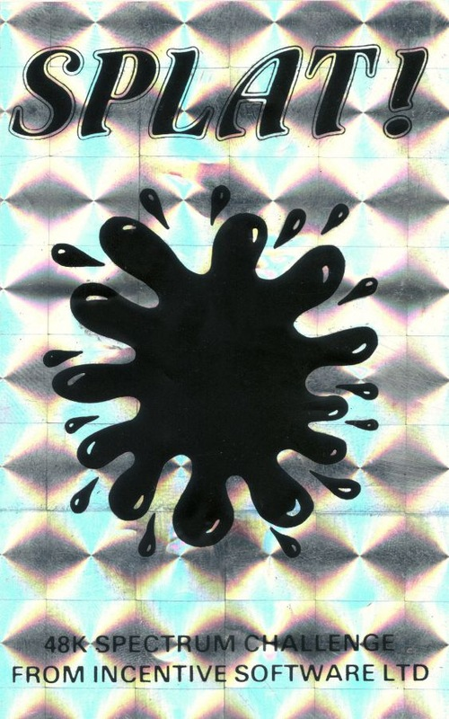

LOAD " "
LOAD " "

SPLAT!Ian Andrew, who created Ouicksilva's best seller Mined-Out, seems to take some delight in being referred to as, 'over the
hill,' at the ripe old age of 22. To prove how agile a senile
programmer can be he has struck back with this new maze type game, which attempts to splatter you against the walls of your
tv screen. He also introduces us to a new hero called Zippy who, despite his name, proceeds through life at a relatively calm pace. Not that this should put anyone off, for Splat has the same nail-biting qualities as Mined-Out. It creeps up on you sneakily, turning something that you thought was going to be easy into something that is definitely not.
Put simply, Zippy has to move around a maze and escape on level seven. Zippy can eat grass for points (and invisible grass too) and plums for more points. He must avoid the water hazards and nasty spikes. So far, so good, now for the problems. The maze which Zippy inhabits is a great deal bigger than the visible playing area. and it's unstable. From the moment the game starts it begins gently scrolling in any direction it fancies, changing direction at any time. Should Zippy encounter the walls which edge the screen its Spiel!
The maze has been specially designed to tempt you into vile little dead ends because that's usually where the juiciest clumps of grass are to be found — and without those points you can't get out. It's all quite deceptive; you can guide Zippy into what looks like a safe position and start happily chewing the cud. when all of a sudden the wall scrolls down on top of you. From this quiet country house scene, panic can set in at a moment's notice. Progressing satisfactorily to a second screen the maze becomes less helpful still and a river with narrow bridges appears. On the balance side there are plums to eat and invisible grass which signals the fact it has been eaten with a bleep. At higher levels the maze moves much faster and there are spikes dotted around, which although not much trouble to avoid can be very nasty if a panic sets in.
This is a game for points and in fact the makers offered a points competition which closed 14 January 1984. The winner received £500. The game already contains a system which awards you a code for your new high score (over 500 points). The entry with the highest score code was the winner. I see from our notes that it says. 'Level three - Hi Code appeared, 715 points, code: DD1R. Unfortunately died at that moment.
GENERAL
All three reviewers playing and writing independently, were very impressed with this game. You can play with Kempston or AGF and Protek joysticks, use cursor keys or user-defined keys. The graphics are very smooth and the scrolling in four directions is excellent. Colour was commented on favourably. Packaging and instructions are first rate. If you get through a screen the computer shouts out Yippee!
'Perhaps Splat suffers from the random maze movement because it lessens the skill factor, on the other hand it keeps you on your toes.'
• 'Because of the continuous scrolling of the maze you will never get tired of going round the same old screens.'
• 'This is a game with growing appeal and a thoroughly mean, ornery streak which guarantees its addictivity.
Keyboard positions:
user defined excellent
Joystick options:
excellent as provided, but with user defined keys it's suitable for almost any controller
Keyboard only play:
positive, smooth movement
Use of colour:
very good
Graphics:
good
Sound:
good
Skill levels:
seven
Lives:
three
General rating:
highly recommended
| Use of computer | 95% |
| Graphics | 70% |
| Playability | 74% |
| Getting started | 85% |
| Addictive qualities | 75% |
| Value for money | 90% |
| Overall | 81.5% |

{kind=link}